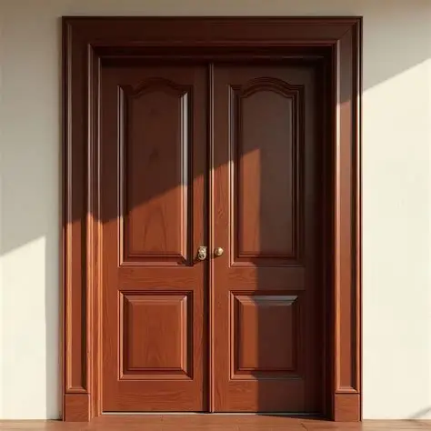

Ben je het zat dat je telkens gestoord wordt? Wil je ervoor zorgen dat die vervelende familieleden die je constant storen het afleren? Dan is dit product voor jouw, het DNDeur alarm. Dit alarm gaat af als iemand je deur open doet waardoor die persoon zal schrikken. Op een gegeven moment doen ze het niet meer, want ze weten dat er iets afgaat als ze het proberen!
Instructions